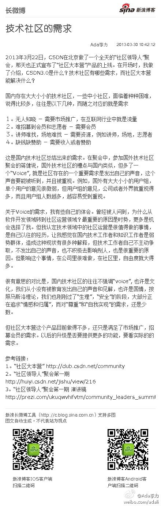
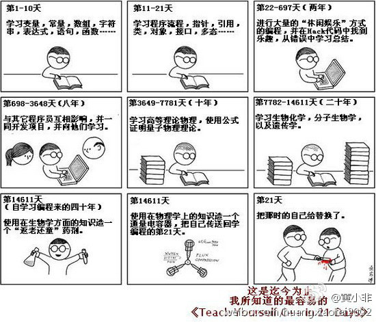

技术社区的需求：2013年3月22日，CSDN在北京做了一个全天的“社区领导人”聚会，那天也正式宣布了“社区大本营”产品的上线。在开场时，我做了介绍，CSDN3.0是什么？技术社区有哪些需求，而社区... 网页链接 （使用新浪长微博工具发布 网页链接） 
社区玩的是暧昧？：在社区领导人聚会中，佟辉提出社区运营中“一妞顶十汉”的方法，获得在场很多人的赞同，就是说，要提高社区的活跃度和参与度，要更多引入女性参与，有女性参加的活动，男性的... 网页链接 （使用新浪长微博工具发布 网页链接）
回复@吾儿天培090416:竟然被说脸小，可见对比的重要性。墨镜尺寸最好能盖住半张脸。 //@吾儿天培090416:看你微信的戴墨镜近照，感叹你脸好小呀[呵呵]@Ada李力:21天能养成新习惯吗？我准备用接下来的21天，坚持每天运动半小时。
这个漫画很有名吗？@黄小非:@Ada李力 姐说的21天养成坚持锻炼的新习惯，这在技术上是没有问题滴; 但是@老赵 描述的21天学会C++ ...... 就需要时间机器了 @kisskiss傅某某 